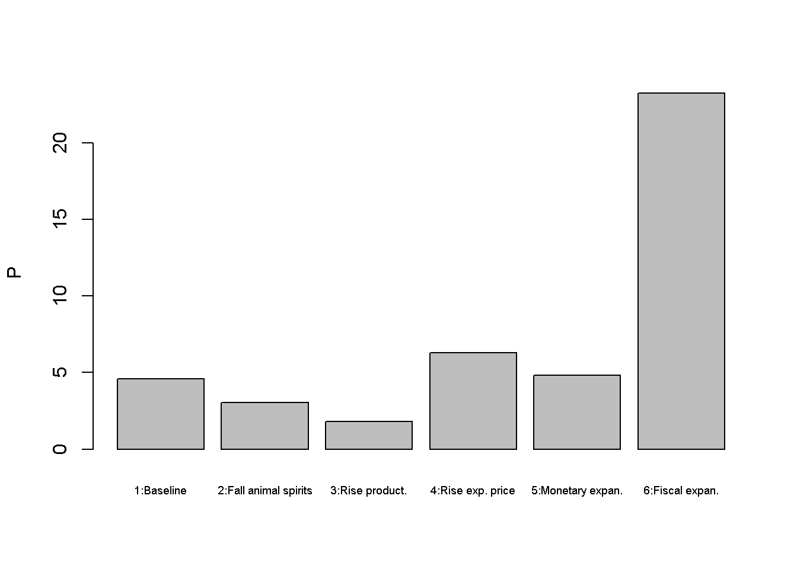
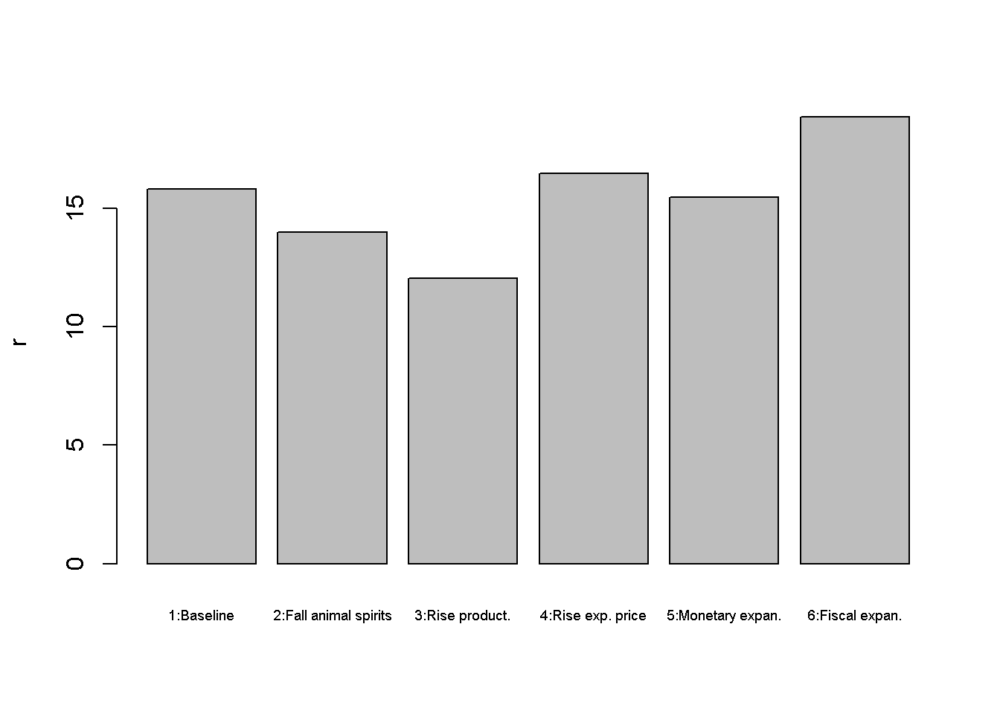
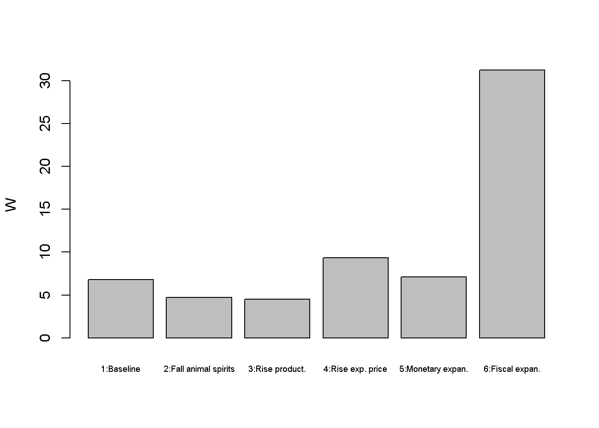
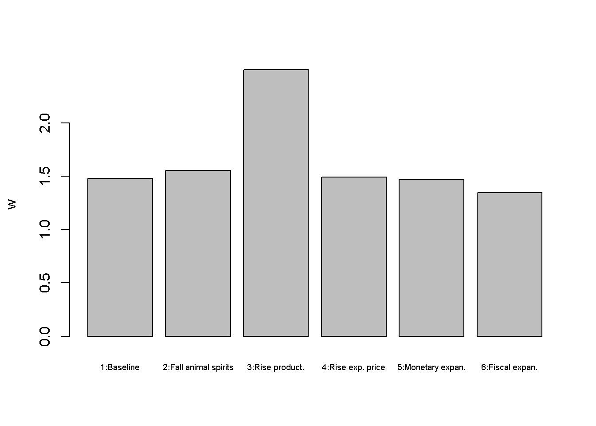
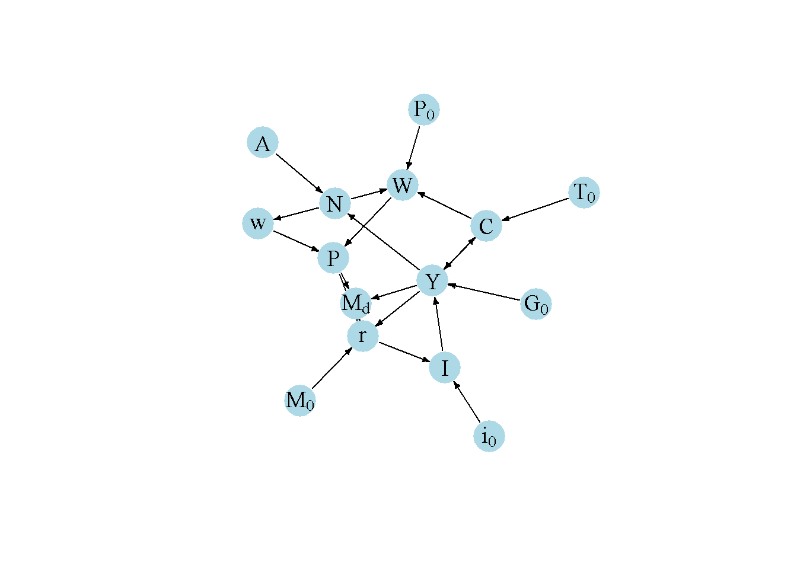

#Clear the environment
rm(list=ls(all=TRUE))
# Set number of scenarios (including baseline)
S=6
#Create vector in which equilibrium solutions from different parameterisations will be stored
Y_star=vector(length=S) # Income/output
C_star=vector(length=S) # Consumption
I_star=vector(length=S) # Investment
r_star=vector(length=S) # Real interest rate
N_star=vector(length=S) # Employment
U_star=vector(length=S) # Unemployment rate
P_star=vector(length=S) # Price level
w_star=vector(length=S) # Real wage
W_star=vector(length=S) # Nominal wage
# Set exogenous variables that will be shifted
i0=vector(length=S) # autonomous investment (animal spirits)
M0=vector(length=S) # money supply
G0=vector(length=S) # government spending
P0=vector(length=S) # expected price level
A=vector(length=S) # Exogenous productivity
### Construct different scenarios
# baseline
A[]=2
i0[]=2
M0[]=5
G0[]=1
P0[]=1
# scenario 2: fall in animal spirits
i0[2]=1.5
# scenario 3: increase in productivity
A[3]=3
# scenario 4: increase in expected price level
P0[4]=1.5
# scenario 5: monetary expansion
M0[5]=6
# scenario 6: fiscal expansion
G0[6]=2
#Set constant parameter values
c0=2 # Autonomous consumption
c1=0.6 # Sensitivity of consumption with respect to the income (marginal propensity to consume)
i1=0.1 # Sensitivity of investment with respect to the interest rate
m1=0.2 # Sensitivity of money demand with respect to income
m2=0.4 # Sensitivity of money demand with respect to interest rate
Nf=5 # Full employment/labour force
K=4 # Exogenous capital stock
a=0.3 # Capital elasticity of output
b=0.4 # household preference for leisure
T0=1 # tax revenues
m0=6 # liquidity preference
# Initialise endogenous variables at some arbitrary positive value
Y = C = I = r = P = w = N = W = 1
#Solve this system numerically through 1000 iterations based on the initialisation
for (i in 1:S){
for (iterations in 1:1000){
#Model equations
# Goods market equilibrium
Y = C + I + G0[i]
# Consumption demand
C = c0 + c1*(Y-T0)
# Investment demand
I = i0[i] - i1*r
# Money market, solved for interest rate
r = (m0 - (M0[i]/P))/m2 + m1*Y/m2
#Unemployment rate
U = (1 - N/Nf)
#Real wage
w = A[i]*(1-a)*(K^a)*N^(-a)
#Nominal wage
W= (P0[i]*b*C)/(1- (N/Nf))
#Price level
P = W/w
#Employment
N = (Y/(A[i]*(K^a)))^(1/(1-a))
}
#Save results for different parameterisations in vector
Y_star[i]=Y
C_star[i]=C
I_star[i]=I
r_star[i]=r
N_star[i]=N
U_star[i]=U
P_star[i]=P
w_star[i]=w
W_star[i]=W
}5 A Neoclassical Synthesis Model (IS-LM-AS-AD)
Overview
The Neoclassical Synthesis was developed in the 1940s and 1950s by Franco Modigliani, Paul Samuelson and others. It introduced neoclassical components into the Keynesian IS-LM model that had been proposed by John R. Hicks (1937) to formalise some key ideas of John Maynard Keynes’ 1936 book The General Theory of Employment, Interest and Money. The IS-LM model, which is analysed in detail in Chapter 4, contains two equilibrium relationships: a goods market equilibrium between investment and saving (IS) and a money market equilibrium between money demand and money supply (LM). In the goods market, aggregate supply adjusts to the level of aggregate demand given by the expenditure decisions of households, firms, and the government. Money demand is determined by aggregate income and the interest rate on bonds. The money supply is assumed to be exogenous. The two markets pin down equilibrium output and the interest rate.
The Neoclassical Synthesis adds a neoclassical labour market with Keynesian frictions to the IS-LM model. Following the discussion in Froyen (2005), chap. 9, we consider a labour market in which firms have perfect information about the real wage, whereas workers need to form expectations about the price level. Price expectations are assumed to be exogenous in the short run. Workers thus suffer from `money illusion’: an increase in the actual price levels reduces the real wage but leaves their labour supply unchanged. This gives rise to an upward-sloping aggregate supply (AS) (or Phillips) curve. By contrast, the aggregate demand (AD) curve is downward-sloping as a higher price level increases the demand for real money balances, which pushes up the interest rate.
In this short-run model, prices are flexible but the capital stock is fixed. The focus is thus on goods market equilibrium rather than economic growth. As all endogenous variables adjust instantaneously, the model is static. We consider a version with a Cobb-Douglass production function and otherwise linear behavioural functions, based on the graphical analysis in Froyen (2005), chap. 9.
The Model
\[ Y=C+I+G_0 \tag{5.1}\]
\[ C=c_0+c_1(Y-T_0), \quad c_1 \in (0,1) \tag{5.2}\]
\[ I= i_0 - i_1r, \quad i_1 > 0 \tag{5.3}\]
\[ M_s=M_0 \tag{5.4}\]
\[ \frac{M_d}{P}=m_0 + m_1Y -m_2r, \quad m_1, m_2 > 0 \tag{5.5}\]
\[ M_d(r)=M_s \tag{5.6}\]
\[ w=(1-a)AK^aN^{-a} ,\quad a\in (0,1) \tag{5.7}\]
\[ W=\frac{P^ebC}{1-\frac{N}{N^f}}, \quad b \in (0,1) \tag{5.8}\]
\[ P=\frac{W}{w} \tag{5.9}\]
\[ N=\left( \frac{Y}{AK^{a}}\right)^{\frac{1}{1-a}} \tag{5.10}\]
\[ U=1-\frac{N}{N^f} \tag{5.11}\]
where \(Y\), \(C\), \(I\), \(G_0\), \(T_0\), \(r\), \(M_s\), \(M_d\), \(w\), \(A\), \(K\), \(N\), \(W\), \(P^e\) \(N^f\), \(P\), and \(U\) are output, consumption, investment, (exogenous) government spending, (exogenous) taxes, the real interest rate on bonds, nominal money supply, nominal money demand, the real wage, productivity, the capital stock, employment, the nominal wage, the price level expected by workers, the labour force (or total available time for work), the actual price level, and the unemployment rate, respectively.
Equation 5.1 is the goods market equilibrium condition. Aggregate supply (\(Y\)) accommodates to the level of aggregate demand which is the sum of consumption, investment, and government spending. Equation 5.2 is the consumption function consisting of autonomous consumption demand (\(c_0\)) and a marginal propensity to consume (\(c_1\)) out of disposable income (\(Y-T_0\)). Investment demand in Equation 5.3 has an autonomous component (\(i_0\)) capturing Keynesian animal spirits and a component that is negatively related to the rate of interest on bonds. Government spending and taxation are exogenous. Similarly, the nominal money supply (\(M_0\)) in Equation 5.4 is assumed to be exogenous. By Equation 5.5, households’ real money demand is positively related to income (capturing the transaction demand for money) and negatively related to the interest rate on bonds (capturing speculative demand). There is also an autonomous term (\(m_0\)) capturing Keynesian liquidity preference. Equilibrium in the money market Equation 5.6 yields an equation for the interest rate.
In Equation 5.7, the real wage is determined by the marginal product of labour implied by a Cobb-Douglass production function (\(Y=AK^aN^{1-a}\)). This means the real wage is always consistent with firms’ demand for labour based on profit-maximisation.1 Equation 5.8 specifies the nominal wage as implied by households’ labour supply curve. Optimising households supply labour based on their work-leisure trade-off (with the parameter \(b\) capturing their preference for leisure, \(1-\frac{N}{N^f}\)). Since they don’t have knowledge of the current real wage, they base their decisions on the expected price level \(P^e\), which is exogenous in the short run. The actual price level is then given by the ratio of the nominal wage to the real wage Equation 5.9. In other words, firms set prices such that the nominal wage they pay to workers are consistent with their own desired real wage. Equation 5.10 pins down employment as implied by the Cobb-Douglass production function. In conjunction with an exogenously given labour force \(N^f\) (or total available labour time), the level of employment can be used to obtain an unemployment rate in Equation 5.11.
Simulation
Parameterisation
Table 1 reports the parameterisation used in the simulation. Besides a baseline (labelled as scenario 1), five further scenarios will be considered. Scenario 2 is a switch towards pessimistic sentiments in the form of a fall in animal spirits (\(i_0\)). In scenario 3, productivity (\(A\)) increases. Scenario 4 considers a rise in the price level expected by workers (\(P^e\)). Scenarios 5 and 6 consider two different government policies to stimulate the economy: a monetary expansion (\(M_0\)) and a fiscal expansion (\(G_0\)).
Table 1: Parameterisation
| Scenario | \(c_0\) | \(c_1\) | \(i_0\) | \(i_1\) | \(A\) | \(P^e\) | \(m_0\) | \(m_1\) | \(m_2\) | \(M_0\) | \(G_0\) | \(T_0\) | \(N^f\) | \(a\) | \(b\) |
|---|---|---|---|---|---|---|---|---|---|---|---|---|---|---|---|
| 1: baseline | 2 | 0.6 | 2 | 0.1 | 2 | 1 | 6 | 0.2 | 0.4 | 5 | 1 | 1 | 7 | 0.3 | 0.4 |
| 2: fall in animal spirits (\(i_0\)) | 2 | 0.6 | 1.5 | 0.1 | 2 | 1 | 6 | 0.2 | 0.4 | 5 | 1 | 1 | 7 | 0.3 | 0.4 |
| 3: rise in productivity (\(A\)) | 2 | 0.6 | 2 | 0.1 | 3 | 1 | 6 | 0.2 | 0.4 | 5 | 1 | 1 | 7 | 0.3 | 0.4 |
| 4: rise in expected price level (\(P^e\)) | 2 | 0.6 | 2 | 0.1 | 2 | 1.5 | 6 | 0.2 | 0.4 | 5 | 1 | 1 | 7 | 0.3 | 0.4 |
| 5: monetary expansion (\(M_0\)) | 2 | 0.6 | 2 | 0.1 | 2 | 1 | 6 | 0.2 | 0.4 | 6 | 1 | 1 | 7 | 0.3 | 0.4 |
| 6: fiscal expansion (\(G_0\)) | 2 | 0.6 | 2 | 0.1 | 2 | 1 | 6 | 0.2 | 0.4 | 5 | 2 | 1 | 7 | 0.3 | 0.4 |
Simulation code
Python code
import numpy as np
# Set the number of scenarios (including baseline)
S = 6
# Create arrays to store equilibrium solutions from different parameterizations
Y_star = np.empty(S) # Income/output
C_star = np.empty(S) # Consumption
I_star = np.empty(S) # Investment
r_star = np.empty(S) # Real interest rate
N_star = np.empty(S) # Employment
U_star = np.empty(S) # Unemployment rate
P_star = np.empty(S) # Price level
w_star = np.empty(S) # Real wage
W_star = np.empty(S) # Nominal wage
# Set exogenous variables that will be shifted
i0 = np.zeros(S) # Autonomous investment (animal spirits)
M0 = np.zeros(S) # Money supply
G0 = np.zeros(S) # Government spending
P0 = np.zeros(S) # Expected price level
A = np.empty(S) # Exogenous productivity
# Construct different scenarios
# baseline
A[:] = 2
i0[:] = 2
M0[:] = 5
G0[:] = 1
P0[:] = 1
# scenario 2: fall in animal spirits
i0[1] = 1.5
# scenario 3: increase in productivity
A[2] = 3
# scenario 4: increase in expected price level
P0[3] = 1.5
# scenario 5: monetary expansion
M0[4] = 6
# scenario 6: fiscal expansion
G0[5] = 2
# Set constant parameter values
c0 = 2 # Autonomous consumption
c1 = 0.6 # Sensitivity of consumption with respect to income (marginal propensity to consume)
i1 = 0.1 # Sensitivity of investment with respect to the interest rate
m1 = 0.2 # Sensitivity of money demand with respect to income
m2 = 0.4 # Sensitivity of money demand with respect to interest rate
Nf = 5 # Full employment/labor force
K = 4 # Exogenous capital stock
a = 0.3 # Capital elasticity of output
b = 0.4 # Household preference for leisure
T0 = 1 # Tax revenues
m0 = 6 # Liquidity preference
# Initialize endogenous variables at some arbitrary positive value
Y = C = I = r = P = w = N = W = 1
# Solve this system numerically through 1000 iterations based on the initialization
for i in range(S):
for iterations in range(1000):
# Model equations
# Goods market equilibrium
Y = C + I + G0[i]
# Consumption demand
C = c0 + c1 * (Y - T0)
# Investment demand
I = i0[i] - i1 * r
# Money market, solved for interest rate
r = (m0 - (M0[i] / P)) / m2 + m1 * Y / m2
# Unemployment rate
U = 1 - N / Nf
# Real wage
w = A[i] * (1 - a) * (K ** a) * (N ** (-a))
# Nominal wage
W = (P0[i] * b * C) / (1 - (N / Nf))
# Price level
P = W / w
# Employment
N = (Y / (A[i] * (K ** a))) ** (1 / (1 - a))
# Save results for different parameterizations in the arrays
Y_star[i] = Y
C_star[i] = C
I_star[i] = IPlots
Figures Figure 18.2 - Figure 5.5 depict the response of the model’s key endogenous variables to various shifts. A fall in animal spirits (scenario 2) reduces aggregate demand and thereby output and employment (despite a fall in the interest rate). This reduces workers’ nominal wage demands and thus the price level. An increase in productivity (scenario 3) has expansionary effects on output but adverse effects on employment. Higher productivity means that fewer workers need to be hired to produce the same level of output. However, the corresponding reduction in employment also reduces the price level, which lowers the (real) demand for money and thus lowers the interest rate. This has expansionary effects on output.
barplot(Y_star, ylab="Y", names.arg=c("1:Baseline", "2:Fall animal spirits", "3:Rise product.",
"4:Rise exp. price", "5:Monetary expan.", "6:Fiscal expan."), cex.names = 0.6)barplot(P_star, ylab="P", names.arg=c("1:Baseline", "2:Fall animal spirits", "3:Rise product.",
"4:Rise exp. price", "5:Monetary expan.", "6:Fiscal expan."), cex.names = 0.6)

barplot(r_star, ylab="r", names.arg=c("1:Baseline", "2:Fall animal spirits", "3:Rise product.",
"4:Rise exp. price", "5:Monetary expan.", "6:Fiscal expan."), cex.names = 0.6)

A rise in the expected price level (scenario 4) raises nominal wages and thereby the actual price level. This raises the interest rate, which exerts a (small) contractionary effect on output and employment. Scenarios 5 and 6 assess two different macroeconomic policy tools to stimulate output. A monetary expansion lowers the interest rate and increases output but also the price level. Similar results arise for a fiscal expansion. The main difference is that the monetary expansion lowers the interest rate, whereas the fiscal expansion increases it. \
barplot(U_star*100, ylab="U (%)", names.arg=c("1:Baseline", "2:Fall animal spirits", "3:Rise product.",
"4:Rise exp. price", "5:Monetary expan.", "6:Fiscal expan."), cex.names = 0.6)barplot(W_star, ylab="W", names.arg=c("1:Baseline", "2:Fall animal spirits", "3:Rise product.",
"4:Rise exp. price", "5:Monetary expan.", "6:Fiscal expan."), cex.names = 0.6)

barplot(w_star, ylab="w", names.arg=c("1:Baseline", "2:Fall animal spirits", "3:Rise product.",
"4:Rise exp. price", "5:Monetary expan.", "6:Fiscal expan."), cex.names = 0.6)

Python code
# Plot results (here only for output)
import matplotlib.pyplot as plt
scenario_names = ["1:Baseline", "2:Fall animal spirits", "3:Rise product.",
"4:Rise exp. price", "5:Monetary expan.", "6:Fiscal expan."]
plt.bar(scenario_names, Y_star)
plt.ylabel('Y')
plt.xticks(scenario_names, rotation=45, fontsize=6)
plt.show()Directed graph
Another perspective on the model’s properties is provided by its directed graph. A directed graph consists of a set of nodes that represent the variables of the model. Nodes are connected by directed edges. An edge directed from a node \(x_1\) to node \(x_2\) indicates a causal impact of \(x_1\) on \(x_2\).
## Create directed graph
# Construct auxiliary Jacobian matrix for 15 variables: Y, C, I, G, T, r, w, W, P, M0, N, i0, A, P0, Md
M_mat=matrix(c(0,1,1,1,0,0,0,0,0,0,0,0,0,0,0,
1,0,0,0,1,0,0,0,0,0,0,0,0,0,0,
0,0,0,0,0,1,0,0,0,0,0,1,0,0,0,
0,0,0,0,0,0,0,0,0,0,0,0,0,0,0,
0,0,0,0,0,0,0,0,0,0,0,0,0,0,0,
1,0,0,0,0,0,0,0,1,1,0,0,0,0,1,
0,0,0,0,0,0,0,0,0,0,1,0,0,0,0,
0,1,0,0,0,0,0,0,0,0,1,0,0,1,0,
0,0,0,0,0,0,1,1,0,0,0,0,0,0,0,
0,0,0,0,0,0,0,0,0,0,0,0,0,0,0,
1,0,0,0,0,0,0,0,0,0,0,0,1,0,0,
0,0,0,0,0,0,0,0,0,0,0,0,0,0,0,
0,0,0,0,0,0,0,0,0,0,0,0,0,0,0,
0,0,0,0,0,0,0,0,0,0,0,0,0,0,0,
1,0,0,0,0,1,0,0,1,0,0,0,0,0,0), 15, 15, byrow=TRUE)
# Create adjacency matrix from transpose of auxiliary Jacobian
A_mat=t(M_mat)
# Create directed graph from adjacency matrix
library(igraph)
dg= graph_from_adjacency_matrix(A_mat, mode="directed", weighted= NULL)
# Define node labels
V(dg)$name=c("Y", "C", "I", expression(G[0]), expression(T[0]), "r", "w", "W", "P", expression(M[0]), "N", expression(i[0]), "A", expression(P[0]), expression(M[d]))
# Plot directed graph
plot(dg, main="", vertex.size=20, vertex.color="lightblue",
vertex.label.color="black", edge.arrow.size=0.3, edge.width=1.1, edge.size=1.2,
edge.arrow.width=1.2, edge.color="black", vertex.label.cex=1.2,
vertex.frame.color="NA", margin=-0.08)

Python code
# Load relevant libraries
import networkx as nx
import matplotlib.pyplot as plt
import numpy as np
# Define the Jacobian matrix
M_mat = np.array([
[0, 1, 1, 1, 0, 0, 0, 0, 0, 0, 0, 0, 0, 0, 0],
[1, 0, 0, 0, 1, 0, 0, 0, 0, 0, 0, 0, 0, 0, 0],
[0, 0, 0, 0, 0, 1, 0, 0, 0, 0, 0, 1, 0, 0, 0],
[0, 0, 0, 0, 0, 0, 0, 0, 0, 0, 0, 0, 0, 0, 0],
[0, 0, 0, 0, 0, 0, 0, 0, 0, 0, 0, 0, 0, 0, 0],
[1, 0, 0, 0, 0, 0, 0, 0, 1, 1, 0, 0, 0, 0, 1],
[0, 0, 0, 0, 0, 0, 0, 0, 0, 0, 1, 0, 0, 0, 0],
[0, 1, 0, 0, 0, 0, 0, 0, 0, 0, 1, 0, 0, 1, 0],
[0, 0, 0, 0, 0, 0, 1, 1, 0, 0, 0, 0, 0, 0, 0],
[0, 0, 0, 0, 0, 0, 0, 0, 0, 0, 0, 0, 0, 0, 0],
[1, 0, 0, 0, 0, 0, 0, 0, 0, 0, 0, 0, 1, 0, 0],
[0, 0, 0, 0, 0, 0, 0, 0, 0, 0, 0, 0, 0, 0, 0],
[0, 0, 0, 0, 0, 0, 0, 0, 0, 0, 0, 0, 0, 0, 0],
[0, 0, 0, 0, 0, 0, 0, 0, 0, 0, 0, 0, 0, 0, 0],
[1, 0, 0, 0, 1, 0, 0, 1, 0, 0, 0, 0, 0, 0, 0],
])
# Create adjacency matrix from transpose of auxiliary Jacobian and add column names
A_mat = M_mat.transpose()
# Create the graph from the adjacency matrix
G = nx.DiGraph(A_mat)
# Define node labels
nodelabs = {
0: "Y",
1: "C",
2: "I",
3: r"$G_0$",
4: r"$T_0$",
5: "r",
6: "w",
7: "W",
8: "P",
9: r"$M_0$",
10: "N",
11: r"$i_0$",
12: "A",
13: r"$P_0$",
14: r"$M_d$",
}
# Plot the directed graph
pos = nx.spring_layout(G, seed=43)
nx.draw(G, pos, with_labels=True, labels=nodelabs, node_size=300, node_color='lightblue',
font_size=10)
edge_labels = {(u, v): '' for u, v in G.edges}
nx.draw_networkx_edge_labels(G, pos, edge_labels=edge_labels, font_color='black')
plt.axis('off')
plt.show()In Figure 5.7, it can be seen that productivity (\(A\)), taxes (\(T_0\)), government spending (\(G_0\)), animal spirits (\(i_0\)), the money supply (\(M_0\)), and the expected price level (\(P_0\)) are the key exogenous variables of the model. All other variables are endogenous and form a closed loop (or cycle) within the system. The lower-left part of the graph captures the goods market (IS): aggregate demand (consumption, investment, and government spending) determines output. The upper part of the graph contains the labour market, which determines the price level. Finally, the lower-right part of the graph represents the money market (LM), which determines the interest rate. There is a two-way feedback between the goods market and the money market as output impacts the demand for money, and the interest rate affects investment. There is also a feedback from output into the labour market through employment. The labour market feeds into the money market via its effect on prices and thus money demand, which then also feeds into the goods market through the interest rate.
Analytical discussion
In the first step, we will reduce the system to three equations: an IS-curve, an LM-curve, and an AS-curve (or Phillips curve). In the second step, the IS-curve and the LM-curve are combined to yield an AD-curve.
To obtain the IS-curve, substitute Equation 5.2 -Equation 5.3 into Equation 5.1 and solve for \(Y\): \[\begin{align}\label{eq:IS-AS_AD}\tag{IS} Y&=\left(\frac{1}{1-c_1}\right)(c_0 + i_0 + G_0 - i_1r - c_1 T_0). \end{align}\]
To obtain the LM-curve, substitute Equation 5.4 - Equation 5.5 into Equation 5.6 and solve for \(r\):
\[\begin{align}\label{eq:LM-AS_AD}\tag{LM} r&=\left(\frac{1}{m_2}\right)(m_0 - \frac{M_0}{P} + m_1Y). \end{align}\]
To obtain the AS-curve, substitute Equation 5.7, Equation 5.8, Equation 5.10, and Equation 5.2 into Equation 5.9:
\[\begin{align}\label{eq:AS}\tag{AS} P&=\frac{b(c_0-c_1T_0)+ P^ebc_1Y}{(1-a)\left[\left(AK^aY^{-a}\right)^{\frac{1}{1-a}} - \frac{Y}{N^f}\right]}. \end{align}\]
It can readily be seen that the AS-curve is upward-sloping in the \((Y, P)\)-space (recall that \(a \in (0,1)\)).
Finally, to obtain the AD-curve, substitute the LM-equation into the IS-equation:
\[\begin{align}\tag{AD} Y&=\left[\frac{m_2(c_0 + i_0 + G_0 - c_1 T_0) + i_1(\frac{M_0}{P}-m_0)}{(1-c_1)m_2+i_1m_1}\right] \end{align}\]
It can readily be seen that the AD-curve is downward-sloping in the \((Y, P)\)-space.
References
Froyen, Richard T. 2005. Macroeconomics. Theories and Policies. 8th Edition. Pearson Education.
Hicks, A. R. 1937. “Mr. Keynes and the "Classics": A Suggested Interpretation.” Econometrica 5 (2): 147. https://doi.org/10.2307/1907242.
See the notes on the Classical Model for a formal derivation of the labour demand and supply curves from optimisation. A minor modification is that here we work with a normalisation of the term for leisure in the household’s log-utility function, \(\ln(1-\frac{N}{N^f})\), to allow \(N\) to be larger than unity.↩︎